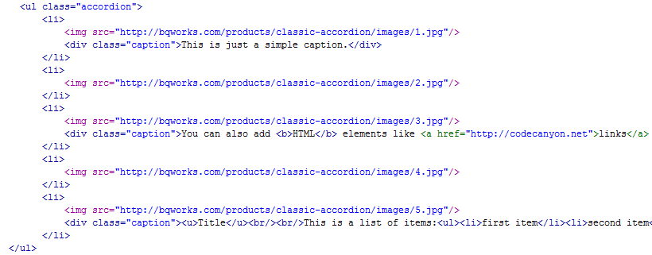
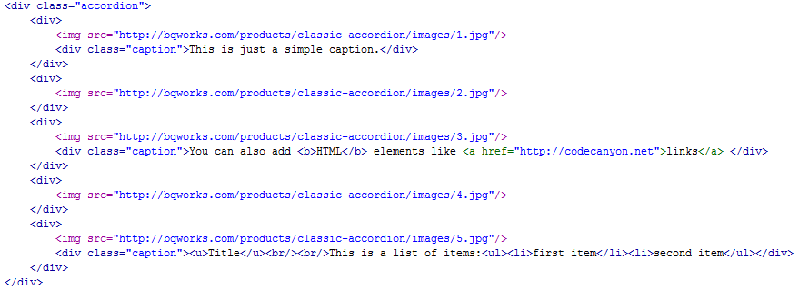
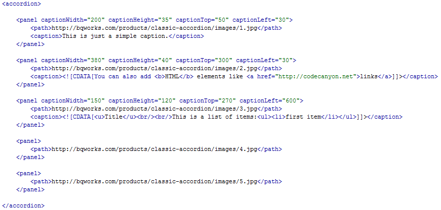
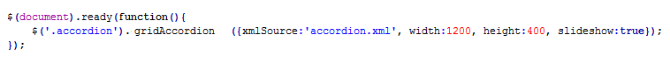
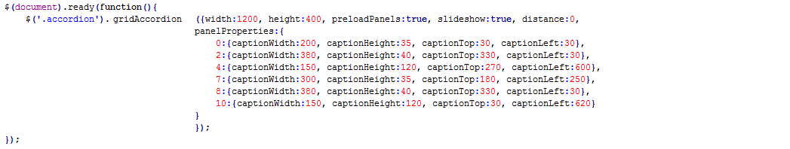
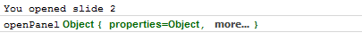
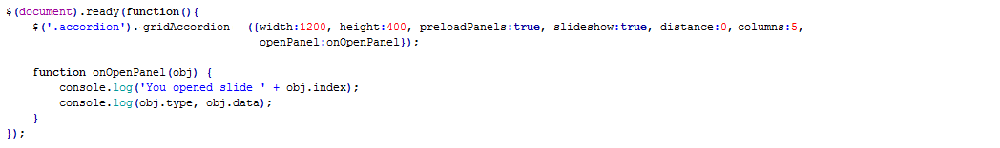

Created: 26/11/2010
Bought By: DigiPulse
By: bqworks
Email: contact@bqworks.com
Thank you for purchasing my file. If you have any questions, please feel free to ask in the item's discussion page or send me an email. Thanks again and I hope you will enjoy using this plugin.
To apply this plugin to a div element you simply select its ID or class name. The plugin will delete all the content of the selected div and will create the accordion in it. If a user doesn't have Javascript enabled, the accordion won't be created and instead the initial content of the div will be displayed.
The plugin gives you flexibility in choosing the HTML markup for your accordion. You can use ordered/unordered list but you can also use divs. Below are two examples, one using unordered list and one using divs.
Unordered list example:
Div example:
You can see in the examples above the structure of the HTML markup. The images are specified using <img> tags and if the images have links, the <img> tags must be wrapped by <a> tags. Also, if you want to have captions you will specify them in <p> or <div> tags and assign them the "caption" class.
The XML support is one of the most important features of this plugin because it makes it very easy for you to update the accordion's content. This is the XML structure that you need to use:
For each panel you want to add to the accordion, you need to create a new <panel> node. Inside the <panel> node you will add all the panel's data. You can see in the above example that I've added the <path> tag to specify the path to the slide's image but there are other details that you can add for each panel, like caption, link, caption's width , caption's height etc.
The <link> tag allows you to specify a link to navigate to when the user clicks on the panel. As the name suggests, the <caption> tag is used to specify a caption for the panel, and this caption can be simple text or HTML content. If you want to use HTML content, you must write it inside the CDATA tag.
After creating the XML file, all you need to do is pass the path of the XML file to the accordion instance:
This plugin has several customizable properties that can be set when the plugin is instantiated. Bellow is a list of all the available properties with their default value and description.
When you set any of these properties they will apply globally, for all the panels, but you can override some of these global settings by setting specific values for each panel. This can be done for both HTML accordions and XML-driven accordions.. The following properties can be set: captionFadeDuration, captionWidth, captionHeight, captionTop, captionLeft.
You will have to pass these individual settings to the "panelProperties" object. For example if you want to edit the 1st and 4th panel, you will do this: panelProperties:{0:{captionWidth:200, captionHeight:35, captionTop:30, captionLeft:30}, 3:{captionWidth:380, captionHeight:40, captionTop:330, captionLeft:30}}. You can see that first you indicate the index of the panel (note that enumeration starts from 0) and then to this index you pass an object that contains the settings.
For XML-driven accordions, you also have the option to specify the settings using attributes for each <panel> tag as you could see in one of the above examples.
The plugin also provides a few callback functions: openPanel, animationComplete, panelClick, panelMouseOver, panelMouseOut, panelLoaded, panelCreated and allPanelsCreated. Each of these callback functions will return an object that contains information about the panel that triggered the event. The information contained is the index of the panel(0, 2, 5 etc.), the type of event(panelClick, animationComplete etc.) and a 'data' object that contains all the panel's information that was specified for that panel.
And this is displayed in Firebug's console:
This plugin also provides a few public methods/functions that can be called using external controls.
Some aspects of the accordion can be customized from within the CSS file. If you open the grid-accordion.css file you will see that the names used for the classes are suggestive for the elements they are applied to. So, if you want to replace the main preloader, you will just go to ".accordion .preloader" and specify a different background image. There are many customizations that can be done from within the CSS file, so I'm not going to enumerate them all, but if there's something you can't figure out how to modify, please feel free to ask for my assistance.
Once again, thank you for purchasing my plugin and if you need any help please let me know.